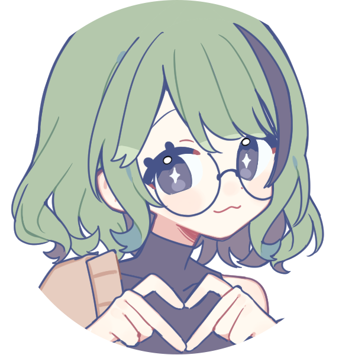

sophia
★
22
★
jun. 28
★
she/they
★
infp-t
★
omniace
★
about me
hobbies & sport
equestrian, aquariums, leatherwork, wirewrapping, game dev, web dev, 3d modelling, pixel art, reading, writing
books
project hail mary, witch hat atelier, secrets of the silent witch, dr stone, the secret history, the poppy war
interested in more of my reading info? check out my library!
games
minecraft (modded ♥), balatro, cult of the lamb, sky: children of the light, noita, shapez, slime rancher, baldur's gate iii, risk of rain 2, fields of mistria, mini motorways, town to city, horses of hoofprint bay, legend of khiimori
fandoms
minecraft, project hail mary, arcane, witch hat atelier, atla, avatar, marvel (kinda), secrets of the silent witch, apothecary diaries, dr stone, violet evergarden
strengths
creativity
it's in everything I do. creativity is how I breathe. i'm always looking for ways to take the creative approach whenever possible.
attention to detail
similar to creativity, it is also in everything I do. I think it's worthless to create anything if you don't take the time to actually look at it and the little details. Creativity without attention to detail is just mindless word vomit (or similar phrases for non-writing)
kindness & empathy
as a creator, it is my responsibility to create a safe environment. When putting my content out in the world, I need to ensure it promotes a positive view, even if writing darker topics. Not even, but especially when creating things that can be hard or even traumatic to some.
skills
programming
One of my favorite strengths. I love to code
drawing & design
I always have the drive to create or design something. A piece of art that displays my emotions, a design to help others, and everything in-between.
writing
When I'm not drawing or programming, I'm writing. Stories that live in my head, appear to me in my dreams, or that I see throughout the day.
socials
discord: suitedsoup
instagram: suitedsoup